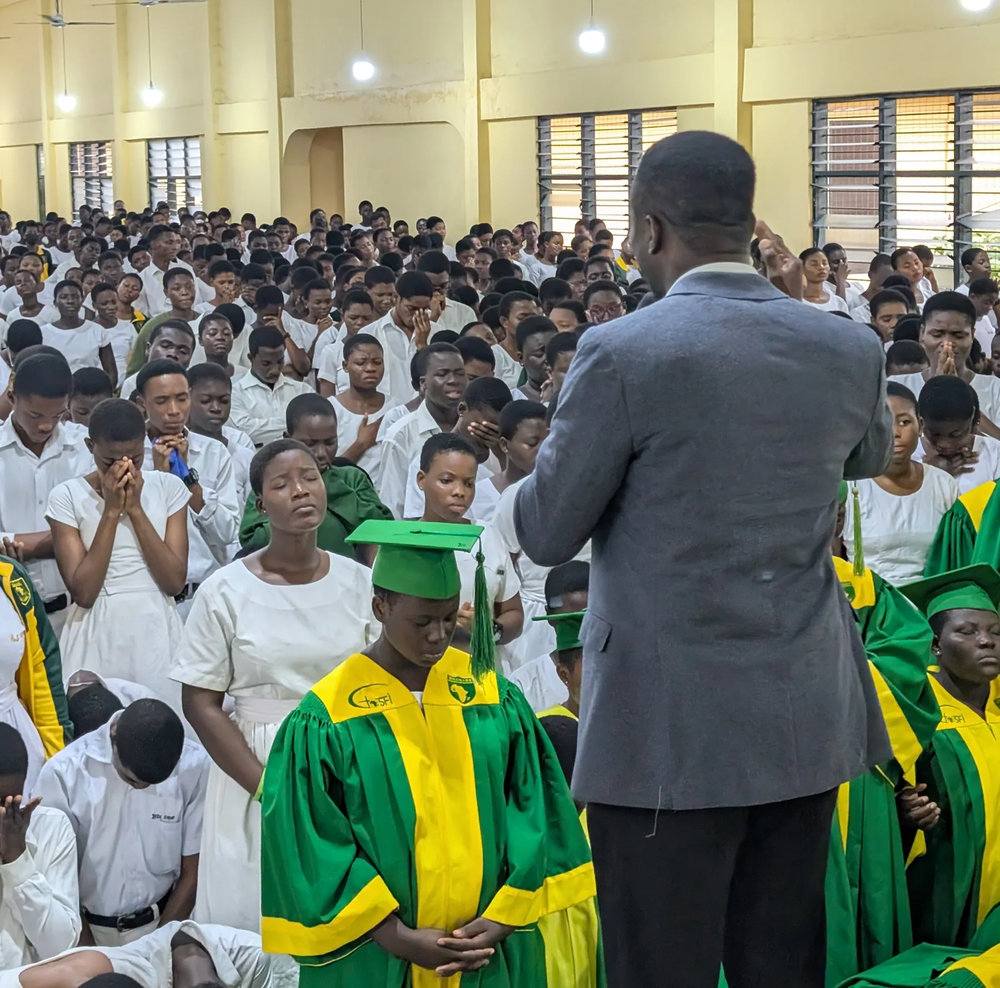
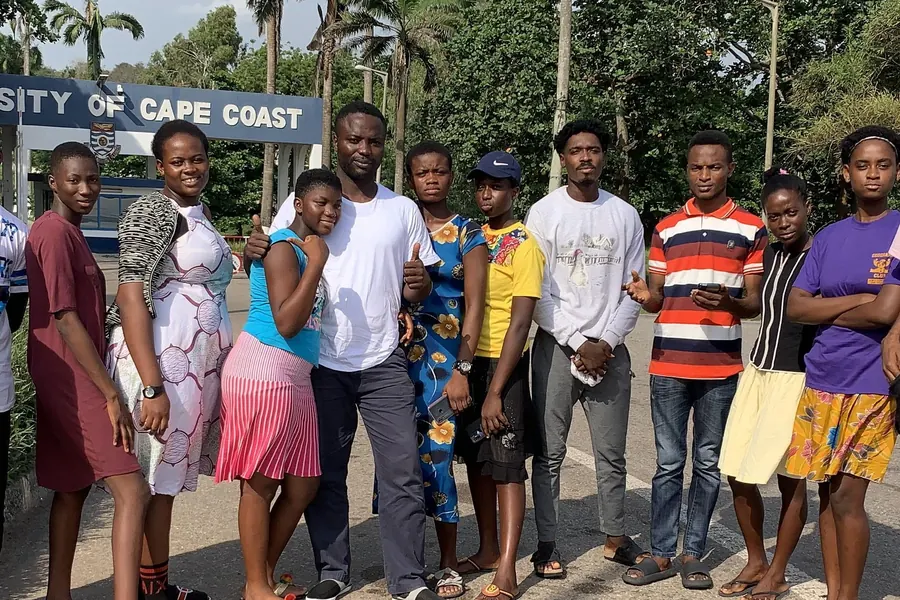
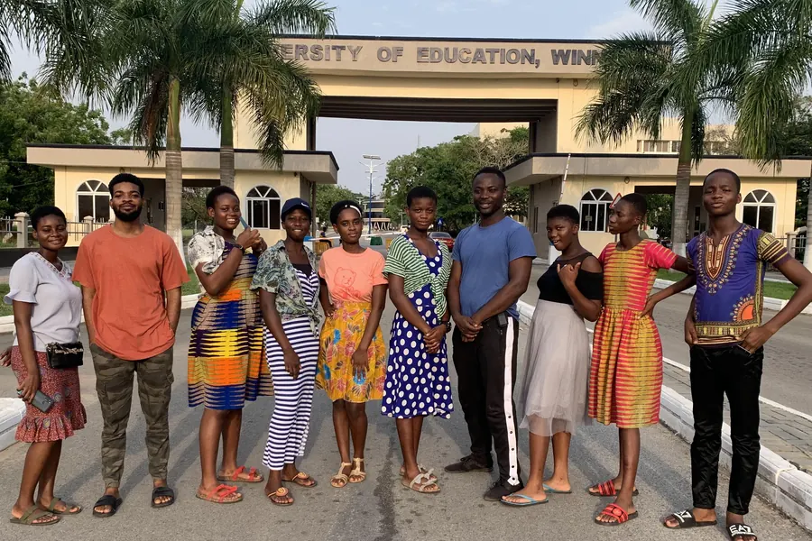
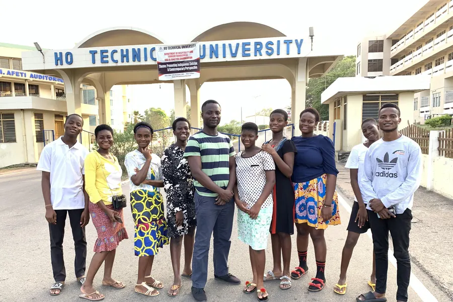

Our vision
To raise a generation of Christ-centred students who are grounded in the Word of God, committed to evangelism, and equipped to fulfil God’s purpose for their lives.

“Simply Fulfilling Prophecies.”
A major branch of Bishop of Souls Ministry, reaching, nurturing and discipling students in schools and on campuses.
Joel Network exists to glorify God by empowering young leaders, particularly former Student Union executives and students, through spiritual nurturing, talent development and evangelistic outreach.
Through school and campus outreaches, students encounter the Gospel, grow spiritually and remain grounded in their faith throughout their educational journey. Joel Network operates as a major branch of Bishop of Souls Ministry while keeping its own leaders, coordinators, school outreach teams and campus ministry structures.
“And afterward I will pour out My Spirit upon all flesh; and your sons and your daughters shall prophesy, your old men shall dream dreams, your young men shall see visions.”Joel 2:28, the foundation of our name

To raise a generation of Christ-centred students who are grounded in the Word of God, committed to evangelism, and equipped to fulfil God’s purpose for their lives.
To reach pupils and students in basic schools, Senior High Schools and tertiary institutions with the Gospel of Jesus Christ, nurturing them through biblical teaching, discipleship, mentorship, prayer and campus fellowship.
Students are reached at the basic school level, nurtured through Senior High School and supported as they move into university and beyond.
Reaching pupils through evangelism, biblical teaching, prayer and age-appropriate Christian instruction, laying a foundation for spiritual growth and godly values.
School evangelism and Gospel ministration, Bible teaching and prayer sessions, Christian mentorship, discipleship and encouragement to remain committed to Christ.
Campus evangelism, Bible studies and prayer meetings, mentorship, raising student leaders and establishing and strengthening campus fellowships.
Photos from our school outreaches.
Joel Network functions on seven points that develop the whole student: spirit, talent, character and career.
Regular worship sessions with sermons from pastors and guest speakers, small Bible study groups, Scripture memorisation and Christian literature, all to build spiritual growth and moral integrity.
Daily prayer sessions, student prayer teams interceding for peers and teachers, a prayer request box for anonymous requests, and prayer walks around campuses.
Music training in instruments, vocals and theory, school choirs and worship bands, music competitions, and sharing performances and testimonies on social media.
Workshops by entrepreneurs, mentorship, business plan competitions with start-up funds for winners, and internship opportunities through local business partnerships.
Experts sharing their career journeys, one-on-one career counselling, CV, interview and job-search workshops, and field trips to businesses and institutions.
Sports clubs for soccer, basketball, volleyball and track and field, friendly matches, an annual sports day, and fitness and wellness programmes.
Volunteer projects such as clean-up drives, shelter and nursing-home visits, plus awareness campaigns on the environment, health and poverty alleviation.
Each campus ministry operates through designated campus leaders and coordinators who organise activities, mobilise students and coordinate evangelistic initiatives.




Watch messages and highlights without leaving the website.
From the Joel Network constitution.
Faith in Jesus Christ as our foundation, nurtured through prayer, Scripture and discipleship.
Leading as Jesus Christ modelled, in our interactions and responsibilities.
Honesty and transparency in all our actions, reflecting biblical principles.
Christ-like compassion that actively meets the needs of others and promotes justice.
Unity among members, respecting diverse talents and gifts for the common mission.
Responsible, accountable management of the resources God has entrusted to us.
Encouraging young people to use their talents and callings to contribute meaningfully.
Identifying and empowering diverse talents and spiritual gifts so youth reach their full potential.
Spreading the Gospel and making a positive difference in schools and beyond.
Equipping young people with sound doctrine and practical skills for today’s challenges.
An inclusive environment for spiritually neglected but talented individuals to be recognised and valued.
Counselling others in the light of Scripture after our ministrations and in any other circumstance.
The Central Executive Council is the highest decision-making body of the network. It comprises the Founder, the National Director, the University Campus Director, Regional Directors and the Secretary.
Beneath it, regional and area coordinators, school ministry coordinators, campus ministry leaders and supporting team members plan outreaches, supervise local teams and keep communication flowing. Decisions are made prayerfully, seeking God’s guidance and unity.
Meet our leaders
National Director, Joel Network Ministry
Provides leadership and coordination for Joel Network’s school evangelism and campus ministry activities.
Membership is open to everyone who professes faith in Jesus Christ and is committed to the vision and mission of Joel Network. Tell us about yourself and a leader will follow up.